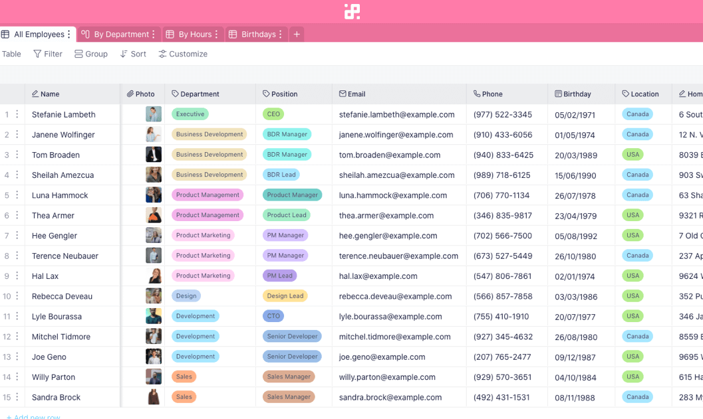

Employee Data Management system



Project Overview
The Employee Management System is a comprehensive web application designed to streamline and automate the management of employee information and HR processes. It allows organizations to efficiently store, track, and manage employee data, attendance, leave, payroll, and performance records. With user-friendly dashboards and role-based access, this system helps HR teams and managers maintain accurate records, improve communication, and enhance overall workforce productivity.
Key Features
- Employee Profiles: Store detailed information including personal details, contact info, job role, and department.
- Attendance Tracking: Monitor daily attendance, clock-in/out times, and generate attendance reports.
- Responsive Design: Accessible from desktop and mobile devices.
Technologies Used
java
spring boot
React
SQL